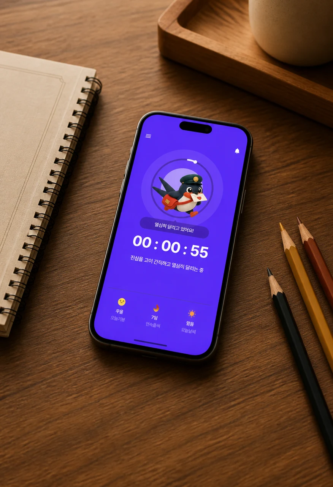
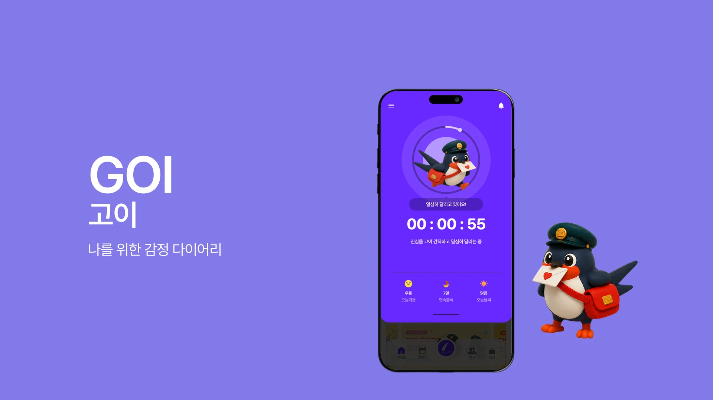

DIARY APPGOI

A diary app made for one focused step at a time.
기록을 더 가볍고 나다운 경험으로 만들기 위해 기획한 다이어리 앱입니다. 서비스 기획과 사용자 흐름 설계, UI 디자인을 혼자 진행했고, AI 어시스턴트를 활용해 실제로 쓸 수 있는 앱으로 배포하기까지 마무리했습니다. 온보딩부터 작성·캘린더·친구·상점까지 16개 화면을 설계했습니다.
Challenge
& Solution
I turned a blank page into four small questions.
일기를 쓰려고 할 때 가장 먼저 막히는 건 빈 화면이라고 봤습니다. 그래서 일기를 만드는 과정을 제목, 컨셉, 꼭 넣을 문구, 추가 요청의 4장 카드로 나눠, 한 번에 하나의 질문에만 답하면 되도록 설계했습니다.
이 흐름이 실제 손에서 어떻게 느껴지는지 확인하려고, AI 어시스턴트를 활용해 직접 동작하는 앱으로 만들었습니다. 화면이 늘어나자 구조를 처음부터 다시 설계했고, 홈 화면에 설치해 앱처럼 쓸 수 있게 했습니다.
AI 일기 생성 기능은 화면과 사용 흐름까지 설계한 프로토타입 단계이며, 실제 생성 모델 연동은 하지 않았습니다. 완성도를 있는 그대로 보여주는 것이 맞다고 판단했습니다.

What
I Learned
Building it taught me how to make decisions.
혼자 끝까지 만들며, 보기 좋은 화면과 실제로 쓰이는 제품 사이의 거리를 체감했습니다. 모르는 영역 앞에서도 AI 어시스턴트를 활용해 질문을 나눠 묻고, 작은 단위로 확인하며 앞으로 나아가는 방법을 이때 익혔습니다.
여기서 얻은 실행력과 AI 활용 방식이 ILKW와 W:RUN으로 이어졌습니다. 지금 보면 고치고 싶은 부분도 보이지만, 그만큼 보는 기준이 생겼다는 뜻이라고 생각합니다.